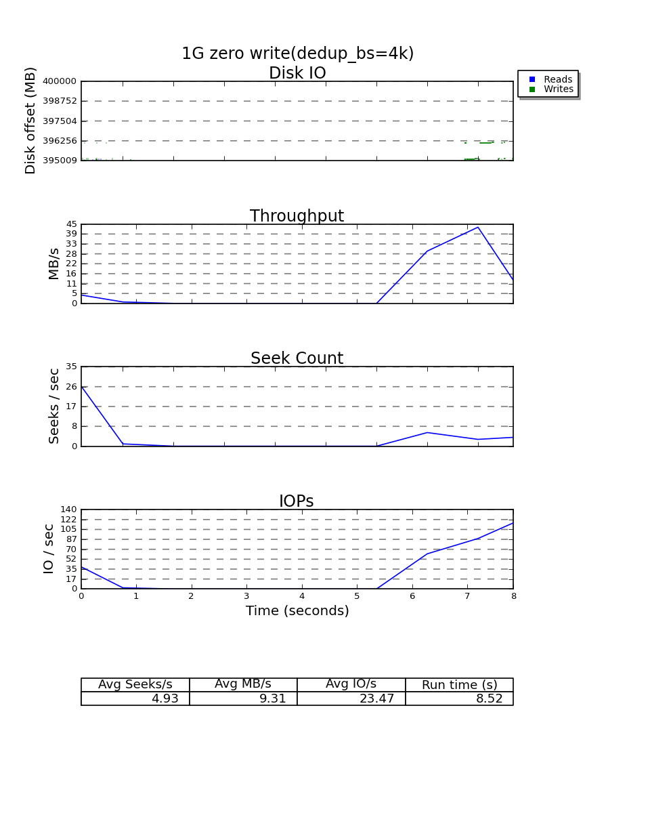

Btrfs Specific Dedup
Liu Bo
Why btrfs needs dedup?
What is dedup?
Dedup
- A specialized compression technique
- Elimate duplicate copies
- Improve storage utilization
- Elimate duplicate copies
- Improve storage utilization

But We Already Have Compression?
A Good FS For Backup!
Btrfs
- Cow B+tree
- Extent based filesystem
- 2^64 byte == 16 EiB maximum file size
- Dynamic inode allocation
- Checksum on both data and metadata
- Compression
- Integrated multiple device support
- Subvolume, writable/readonly snapshot
- Send/receive
- Etc
- Extent based filesystem
- 2^64 byte == 16 EiB maximum file size
- Dynamic inode allocation
- Checksum on both data and metadata
- Compression
- Integrated multiple device support
- Subvolume, writable/readonly snapshot
- Send/receive
- Etc
Btrfs Deduplication
- Inline
- Block level
- Inline
- Block level
Back Reference
- Fingerprint
- Hash algorithm:
crc32c vs sha256
B+tree: dedup tree
Keys: dedup keys
Dedup Engine
- Dedup is a filter of IO as compression
- Take a bunch of locked pages to process
- Asynchronous helper thread, aim to work across all online processors
- Take a bunch of locked pages to process
- Asynchronous helper thread, aim to work across all online processors
Flexible Control
- Register (create the dedup tree)
- Unregister (delete the out-of-date dedup tree)
- "-o dedup"
- "-o dedup_bs=xxx", eg. 4k, 128k
- Unregister (delete the out-of-date dedup tree)
- "-o dedup"
- "-o dedup_bs=xxx", eg. 4k, 128k
Conclusion
- Transparent dedup
- Synchronous, block level
- Compression support
- Tunable granularity, ie. dedup blocksize
- Not default, easy to control
- Synchronous, block level
- Compression support
- Tunable granularity, ie. dedup blocksize
- Not default, easy to control
Limit
Effective on
- Backups
- Virtual Machines
- Network shares for unstructured data such as office documents
- Any application with a large amount of duplicated data
- Virtual Machines
- Network shares for unstructured data such as office documents
- Any application with a large amount of duplicated data
NOT effective on
structured data, like Pictures, Music Files, Movies/Videos,
Encrypted Data
Performance
Performance, cont
DEMO

Known Issues
- ENOSPC
- A byte to byte comparison
QA
- How safe my data is?
- Doesn't deduplication fragment the data and therefore slow down my reads?
Reference
- http://en.wikipedia.org/wiki/Data_deduplication
- http://media.netapp.com/documents/tr-3505.pdf
- http://www.druva.com/blog/2009/01/09/understanding-data-deduplication
- https://btrfs.wiki.kernel.org/index.php/Main_Page
- https://communities.netapp.com/community/netapp-blogs/drdedupe/blog/2010/04/07/how-netapp-deduplication-works--a-primer
- http://en.wikipedia.org/wiki/Fingerprint_%28computing%29
- https://btrfs.wiki.kernel.org
- http://media.netapp.com/documents/tr-3505.pdf
- http://www.druva.com/blog/2009/01/09/understanding-data-deduplication
- https://btrfs.wiki.kernel.org/index.php/Main_Page
- https://communities.netapp.com/community/netapp-blogs/drdedupe/blog/2010/04/07/how-netapp-deduplication-works--a-primer
- http://en.wikipedia.org/wiki/Fingerprint_%28computing%29
- https://btrfs.wiki.kernel.org
Thank you!
Liu Bo
<bo.li.liu@oracle.com>